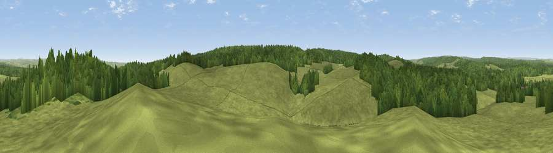

Viewpoint c11508_7588
#27732 in England · top 64% of its area beats it · —Where it is
The exact computed spot (NY 79425 75425). Click the marker for map links.
The view, rendered

A 360° render of this exact spot computed from the terrain model, tree cover and land cover — summer colours, afternoon light, calibrated against photographs of famous viewpoints. Real trees, hedges and buildings will differ in detail.
The panorama
Grey silhouette: terrain skyline in each direction (720 bearings, Earth curvature and refraction included). Dashed green: skyline with trees (+15 m) and buildings (+8 m) as obstacles. Blue strip: how far the ground is visible on each bearing.
Where the view opens
Wedge length = distance to the farthest visible ground on that bearing (vegetation-aware). Rings at 10, 25 and 50 km.
What fills the view
62% grassland · 38% woodland
Angular shares of the visible panorama (visual magnitude), not map area. Landscape diversity 0.29 (0–1 Shannon).
Key numbers
More beautiful places nearby
The staircase of upgrades: each row has a higher view potential than everything closer. Driving times are estimates from straight-line distance, calibrated against real road routing — check an actual route before setting out.
| Place | Direction | Drive | Score |
|---|---|---|---|
| Viewpoint c11472_7593 | S · 2 km | ~5 min | 60.0 |
| Viewpoint c11474_7604 | SSE · 2 km | ~5 min | 60.4 |
| Viewpoint c11477_7613 | SE · 2 km | ~5 min | 68.2 |
| Viewpoint near Bardon Mill | S · 5 km | ~12 min | 71.0 |
| Viewpoint near Greenhaugh | N · 7 km | ~14 min | 71.2 |
| Viewpoint near Fourstones | SE · 13 km | ~24 min | 71.4 |
| Viewpoint near West Woodburn | NE · 16 km | ~28 min | 73.4 |
| Sighty Crag | WNW · 20 km | ~34 min | 74.7 |
55.07285, -2.32375 · source: screening · position refined by local search. Computed location — check access rights before visiting.